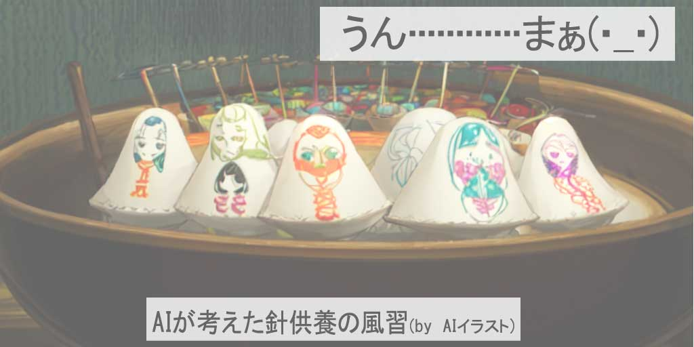

雨水(うすい)の訪れ：春への扉が開く瞬間
「雨水」は、「うすい」と読みます。寒さが和らぎ始め、春の訪れを感じさせる二十四節気の一つです。この時期は、雪や氷が溶け、地面から水分が湧き出る様子を表し、自然界の目覚めを象徴します。
2024年の立春の期間は、2月19日から3月4日までです。
この記事では、雨水が日本の文化や農業に与える影響と、この節気に合った過ごし方を探ります。読み進めるうちに、季節の変化の美しさと、新しい季節への期待が感じられるでしょう。
雨水(うすい)の歴史とその意義：自然のリズムを読み解く
雨水は、日本の暦の中で重要な位置を占めています。古来より、自然のリズムに合わせて生活する人々にとって、雨水は冬の終わりと春の始まりを告げる重要な時期でした。この節気は、自然が再び活動を始める時期を意味し、農作業の準備を始める合図とされてきました。
特に、古代日本では、雨水の時期は農耕準備の開始を意味していました。この時期には、土を耕し、新しい種を蒔く準備が行われます。また、雨水は「水始融（みずはじめてとける）」とも表現され、自然界の変化を感じ取るためのヒントとなっています。現代においても、この節気は新しい季節への移行を感じさせ、私たちの生活に春の訪れを教えてくれるのです。
春を待ちわびる風習：雨水(うすい)の伝統行事
雨水は、春の訪れを告げる節気として、古くから日本でさまざまな風習が行われてきました。
この時期には、自然の恵みを感謝し、農作業の成功を祈るための儀式が多く存在します。例えば、農村部では、種まきの準備を始める「初耕祭」が行われることがあります。この祭りでは、豊かな収穫を願い、土地の神様に感謝の意を表します。
また、雨水の時期は、家庭での清掃や神棚のお供えを新しくする「神迎え」の習慣もあります。これは、新しい年の始まりを清らかに迎え、家族の健康や幸運を願うための行事です。
さらに、この時期には「針供養」も行われます。縫い針を豆腐やゼリーに刺して供えることで、縫物の技術向上や手先の器用さを祈る風習です。これらの行事は、春の訪れと共に新たな始まりを迎える、日本人の心を映し出しています。
雨水(うすい)の味覚：季節を彩る食材

雨水の節気には、春の訪れを感じさせる様々な旬の食材が楽しめます。この時期に特に人気のある食材の一つが「ふきのとう」です。苦味が特徴のふきのとうは、春の訪れを告げる代表的な野菜で、天ぷらや味噌汁の具として用いられます。
また、「わかめ」も春の海からの贈り物で、新鮮なわかめはサラダや酢の物、汁物にすると美味です。
さらに、この時期には「菜の花」も市場に出回ります。鮮やかな黄色い花とほろ苦い味わいが春を感じさせ、お浸しやサラダ、パスタにして楽しむことができます。
また、魚介類では、「しらうお」が旬を迎えます。しらうおは、お刺身やかき揚げ、佃煮など様々な料理で味わうことができます。
これらの食材は、雨水の時期の食卓を彩り、季節の変化を楽しむのに最適です。
春準備の始まり：庭づくりと農作業のコツ

雨水の節気は、庭づくりや農作業に最適な時期とされています。この時期に行う準備作業は、春の美しい庭と豊かな収穫の基礎を築きます。
庭づくりにおいては、まずは冬の間に溜まった枯れ葉や雑草を取り除き、土壌を耕しておくことが大切です。これにより、土壌が柔らかくなり、春の植物が根を張りやすくなります。
農作業に関しては、この時期に種まきを行うことが一般的です。特に、春に収穫を迎える野菜の種を蒔くのに適しています。
例えば、レタスやホウレン草などの葉物野菜や、春キャベツの種を蒔くのがおすすめです。
また、肥料を施し、適切な水やりを行うことで、植物の健全な成長を促進できます。雨水の節気に行うこれらの作業は、春の庭や畑を豊かにするための重要なステップです。
雨水(うすい)と健康：季節の変わり目のウェルネス

雨水の時期は、季節の変わり目にあたり、体調管理に注意が必要です。春の訪れと共に気温の変動が大きくなるため、体調を崩しやすくなります。
この時期は、バランスの取れた食事と十分な休息が特に重要になります。春野菜を取り入れた食事は、ビタミンやミネラルを補給し、免疫力を高める効果があります。
また、春に向けての運動も健康維持に役立ちます。散歩や軽いジョギングなどの定期的な運動は、冬の間に低下した体力を回復し、春の活動への準備を整えることにもつながります。
加えて、季節の変わり目は精神的なストレスも増えがちなので、瞑想やヨガなどを取り入れると、心の安定にも効果的です。雨水の節気を健やかに過ごすためには、身体だけでなく心のケアも大切です。
現代に息づく雨水(うすい)：季節の変化を楽しむ

雨水の節気は、現代生活においても特別な意味を持ち続けています。この時期に感じる自然の変化は、私たちに季節の移ろいを教え、新たな始まりへの期待を高めます。
春の訪れを告げる雨水は、冬の終わりと新しい季節への移行を象徴しており、日々の生活の中で自然のリズムを感じる良い機会を提供します。
現代では、雨水の節気は、都市生活の忙しさの中で季節を感じる重要な時期です。季節の変化に合わせた行事や食事は、私たちに季節ごとの美しさと特色を再発見させます。
また、この時期には、自然とのつながりを感じ、日常生活の中で環境に優しい選択を行うことが重視されています。雨水を通じて、私たちは自然と調和した生活を目指すことができるのです。
最後に：雨水(うすい)の奥深き魅力：春への序章
この記事を通じて、雨水が持つ多面的な魅力について探求してきました。雨水は、春の訪れを告げる重要な節気であり、自然界の変化を感じる絶好の機会を提供します。
この時期の伝統行事や旬の食材、庭づくりと農作業のコツは、季節の変わり目を意識し、新たな始まりへの準備を整えるための重要な手段です。
雨水の節気を通じて、私たちは自然のリズムに合わせた生活の大切さを学び、心身の健康を促進することができます。春への扉が開くこの時期を通じて、新しい季節の到来とともに生命の息吹を感じ、心豊かな日々を過ごしましょう。